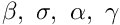
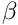

Here is a list of all documented namespaces with brief descriptions:
[detail level 12]
| ▼Ncantilevered_pipe_conveying_fluid | Dynamics of cantilevered pipe conveying fluid |
| CIntegrator | Class containing various integration procedures Contains both `functional-based and value-based numerical integration procedures |
| CCoefficients | Class to determine various coefficients The following coefficients are determined: |
| CModeShape | Class to define modal shape functions and their derivatives Contains function definition of cantilever beam modal shape functions and their derivatives |
| CResponse | Class for time-domain response of the cantilevered pipe system Contains the following functions |
| CRootLocus | Class for root locus To determine variation of complex frequencies (poles) for a given set of parameters  |
| CFlutterVelocityVsBeta | Class for variation of critical flow velocity with mass ratio  for a given set of parameters |